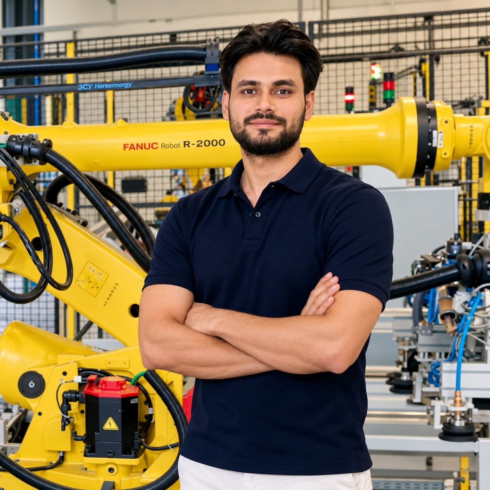

I design, program, and commission industrial automation systems, delivering robotic manufacturing cells from concept and simulation to production deployment.

Abhijeet Karn is a Automation Engineer specializing in the end-to-end design, programming, and commissioning of advanced industrial automation solutions. He designs and delivers fully integrated robotic manufacturing cells for assembly, inspection, testing, and material handling, taking projects from concept and simulation through commissioning and production deployment.
His expertise spans electrical and control systems, PLC programming with Siemens TIA Portal, SCADA, OPC UA, Industrial networking, robot programming, virtual commissioning, and digital simulation. He works with FANUC, KUKA, ABB, Kawasaki, and DOBOT robotic platforms, using FANUC RoboGuide, ABB RobotStudio, Kawasaki K-ROSET, KUKA.Sim, DobotStudio, ROS 2, Gazebo, Python, C++, Lua, and MATLAB to develop high-performance automation solutions. His experience also includes integrating Keyence and SICK machine vision systems, CMM metrology, and mechanical designs created in SolidWorks and CATIA . From system architecture and software development to on-site commissioning, optimization, and production handover, he delivers reliable, scalable, and production-ready manufacturing systems.
He holds an M.Sc. in Mechatronics Engineering and a B.Sc. in Mechanical Engineering from Politecnico di Torino, Italy , following a Diploma in Mechanical Engineering earned in India. He also completed an academic exchange program at the University of Arkansas, U.S.A .